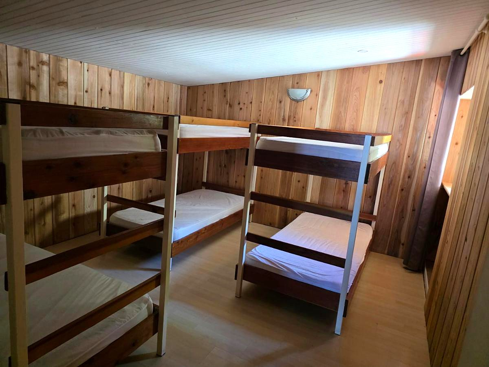
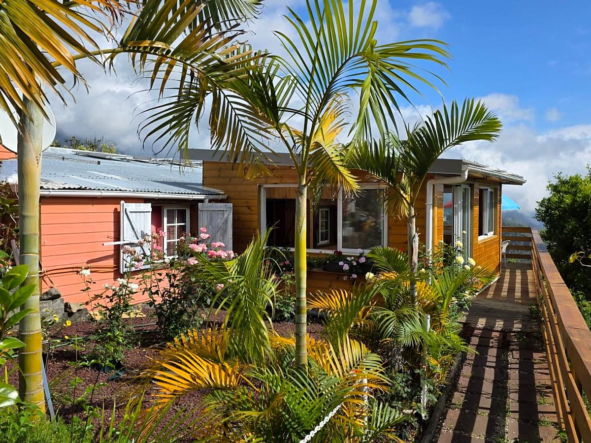
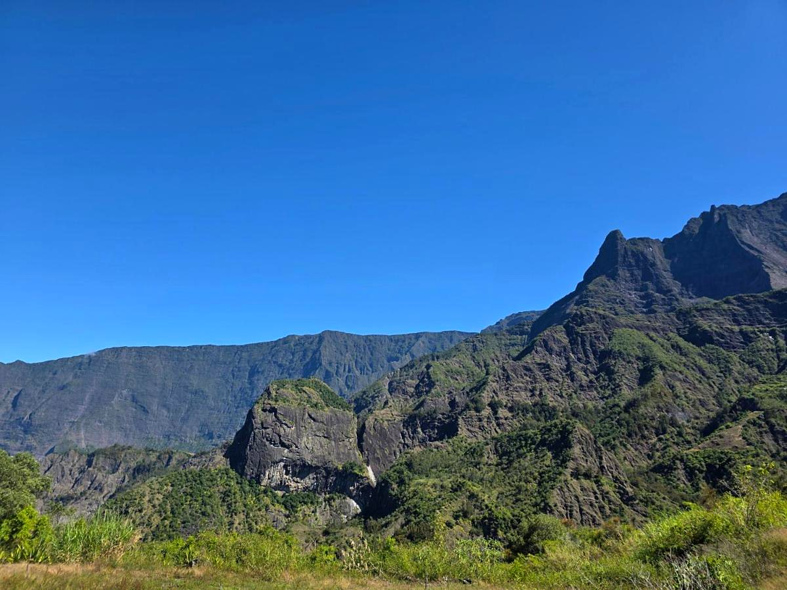
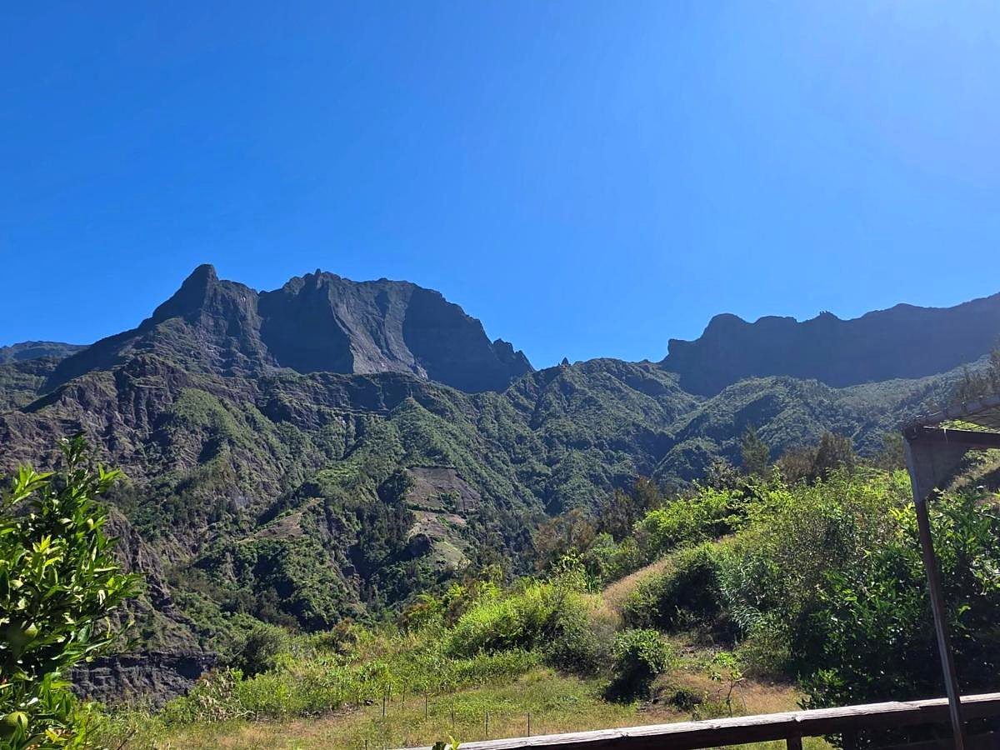
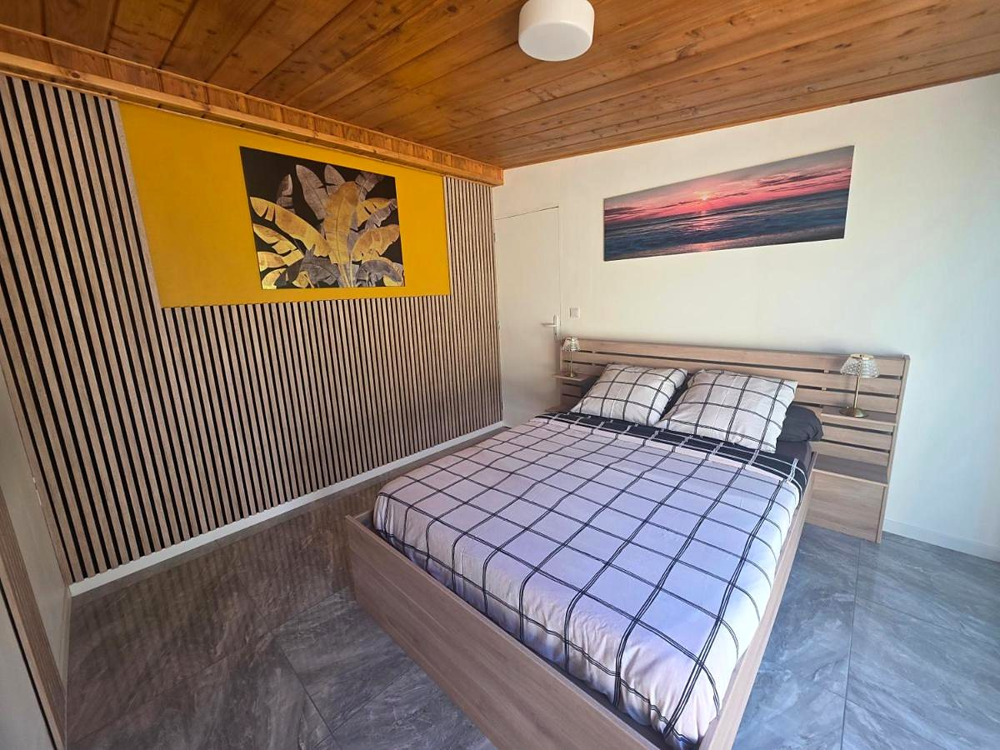
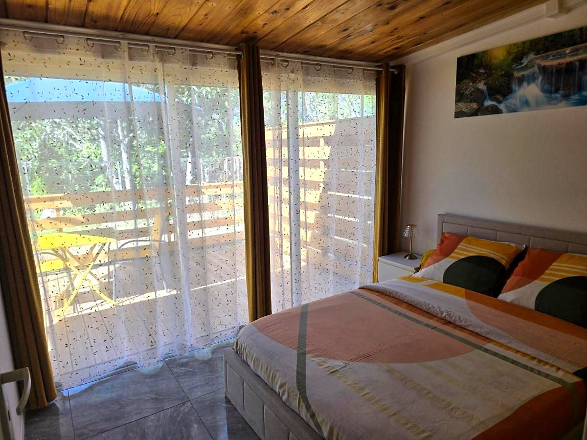
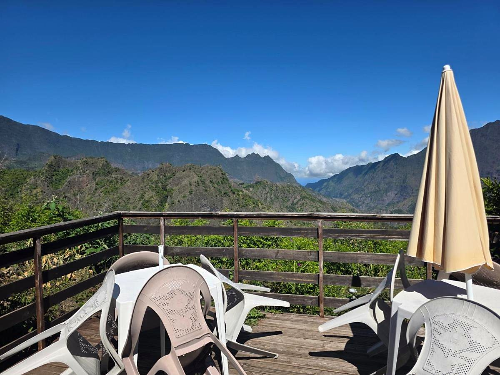
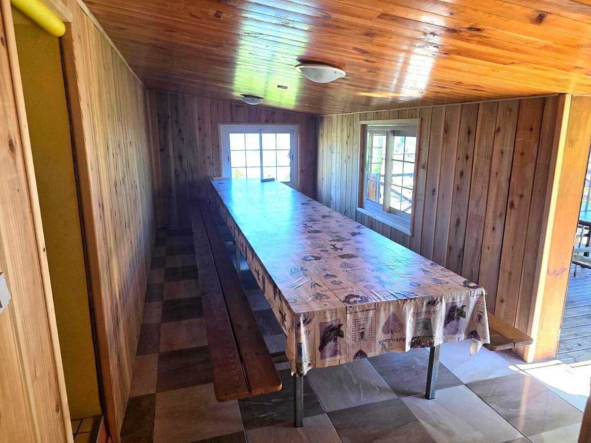

11 places
Les deux dortoirs
Un dortoir de 6 (deux lits doubles et deux lits simples) et un dortoir de 5 lits simples, pour une famille, une bande d'amis ou des marcheurs de passage.
Cilaos · Cirque de Cilaos · 1 200 m
Un gîte de randonnée en pleine nature, avec une vue incroyable sur les montagnes. Sophie et François vous y accueillent, avec le dîner créole et le petit-déjeuner compris.
Le gîte
À 10 minutes en voiture du centre de Cilaos, sur la route de l'Îlet à Cordes, Les Portes du Taïbit accueillent les marcheurs face aux grands sommets de l'île. Un vrai gîte de randonnée, avec son jardin, sa terrasse panoramique et une table créole partagée le soir.
« Entourés par ces montagnes, vous vous sentirez bercés par le doux chant des oiseaux et un calme surprenant. »
Sophie et François, vos hôtes

Le panorama
Depuis la terrasse, le regard file sur les remparts du cirque et ses sommets mythiques.



Glissez pour voir la suite →
Dormir
Quinze places en tout, en dortoir ou en chambre.

Un dortoir de 6 (deux lits doubles et deux lits simples) et un dortoir de 5 lits simples, pour une famille, une bande d'amis ou des marcheurs de passage.

Chacune avec sa douche, ses toilettes et sa terrasse privative, face aux montagnes.

Après la marche, on s'installe face au cirque, au calme, avant le dîner.
Linge de maison inclus, jardin et parking privé sur place. Pensez simplement à glisser votre serviette de bain dans le sac.
À table
Le soir, place à la table de la salle commune. La nuitée comprend le repas du soir tradition créole et le petit-déjeuner, pour repartir du bon pied le lendemain.
Les repas du soir excellents et locaux.Commentaire Booking
Petit-déjeuner prêt la veille, ce qui permet de partir sereinement le ventre plein tôt.Commentaire Booking

Randonner
Une adresse pensée pour les randonneurs qui explorent les sentiers emblématiques reliant Cilaos à Mafate.
Sentier de grande randonnée et sentiers de randonnée autour du gîte.
Le petit-déjeuner est prêt la veille : vous partez tôt, le ventre plein.
La terrasse, la vue sur le cirque, puis le dîner créole.
Ils sont passés par là
Gîte exceptionnel, avec une vue à couper le souffle. Sophie et François sont aux petits soins avec leurs hôtes.Commentaire Booking
Des hôtes très accueillants, qui partagent avec leurs invités un vrai plaisir, une cuisine délicieuse. Un point de vue magnifique.Commentaire Booking
Ne parlons pas de sa cuisine qui est exceptionnelle.Commentaire Booking
Le cadre et la vue au réveil.Commentaire Booking
Offrir pour Noël
Une étape de rando, un dîner créole partagé et le lever du jour sur le cirque : un cadeau qui se vit. Sophie et François vous aident à l'organiser.
Dates et formule à convenir directement avec vos hôtes.
Infos pratiques
7 RD 242, 97413 Cilaos. Sur la route de l'Îlet à Cordes, à 10 minutes en voiture du centre de Cilaos.
Arrivée de 15 h à 19 h, départ jusqu'à 9 h : le bon rythme pour une journée de marche.
Par téléphone, en direct avec Sophie et François, au 0692 65 75 00. Règlement en espèces.
Jardin, terrasse panoramique, parking privé et parking public à proximité.
Dîner tradition créole et petit-déjeuner servis au gîte.
Animaux non acceptés. Gîte non accessible aux personnes à mobilité réduite.
Réserver
Un appel suffit pour poser vos dates, choisir dortoir ou chambre et prévoir le dîner.